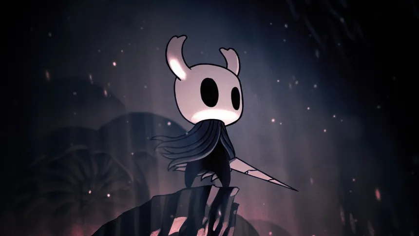

¿Qué es Hollow Knight?

Es un videojuego indie disponible para varias plataformas lanzado en 2017 con una fuerte inspiración en los juegos de estilo metroidvania. Está ambientado en un mundo de insectos desolados tras una gran infección mental.